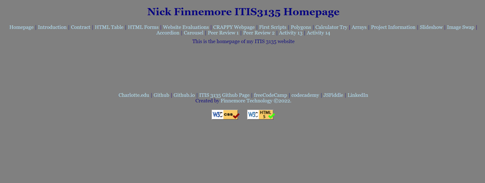

Peer Review 2 - Finnemore, Nick
Checklist
- The design is good as there is good spacing and it is easily readable
- Each page does have a header main and footer
- The header does include name and course but it lacks the brand and added the title of the page
- H2 is used correctly at the start of main on pages
- footer has validation buttons and designed by
I like the breaks in the navigation bar and I think you should add something similar to the header between the different information.